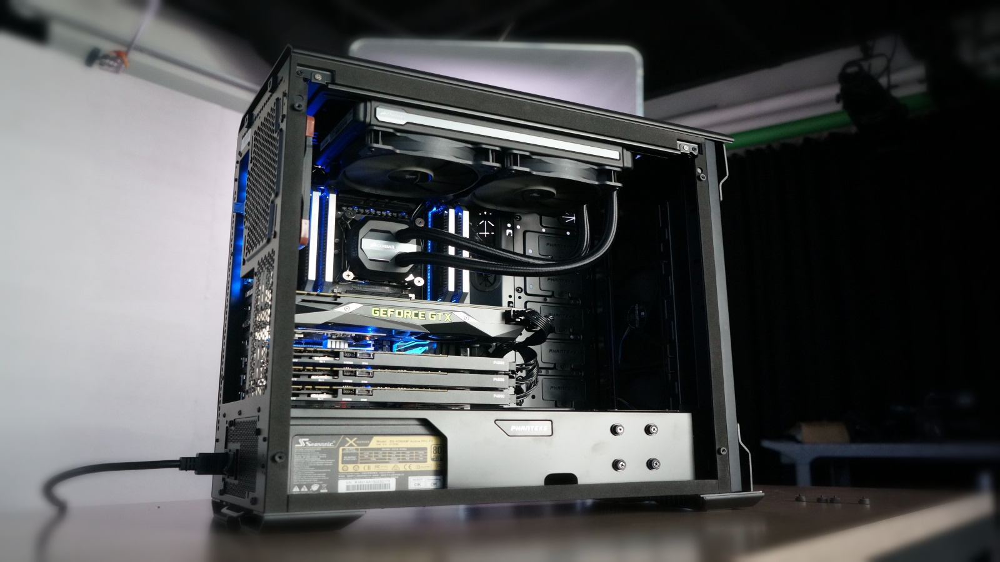
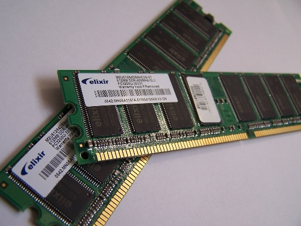

References
Title: "How to Build a PC"
- Author:Kevin Lee and Zak Storey
- Publication:TechRadar
- Date: February 26, 2019
Title: "Wikipedia: Homebuilt Computers"
Color Palette
Copyright, 2019, Aaron Baughman
 Aaron Baughman
Aaron Baughman
Computers are high-tech devices we use every day for things from gaming to editing. They are workhorses that, when built right, can serve for many years to come. People are often afraid of building their own computers, but with a little knowledge and some patience, it's not much harder than putting together a set of LEGOs. In the following sections, different components of a PC are presented and explained to shed some insight on PC assembly.
Concerning computers, there are a number of different types of memory used to store data. Starting with long-term storage, HDDs or Hard Disk Drives are traditionally used. Lately, they have given way to SSDs or Solid State Drives which are incredibly faster and more reliable. Finally, regarding short term memory, sticks of RAM or Random Access Memory function as a temporary cache for the computer while it is on.
Title: "How to Build a PC"
Title: "Wikipedia: Homebuilt Computers"
Color Palette
Copyright, 2019, Aaron Baughman
Aaron Baughman